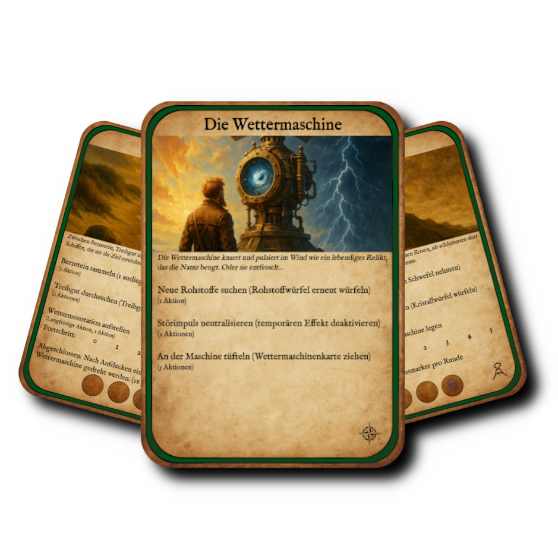
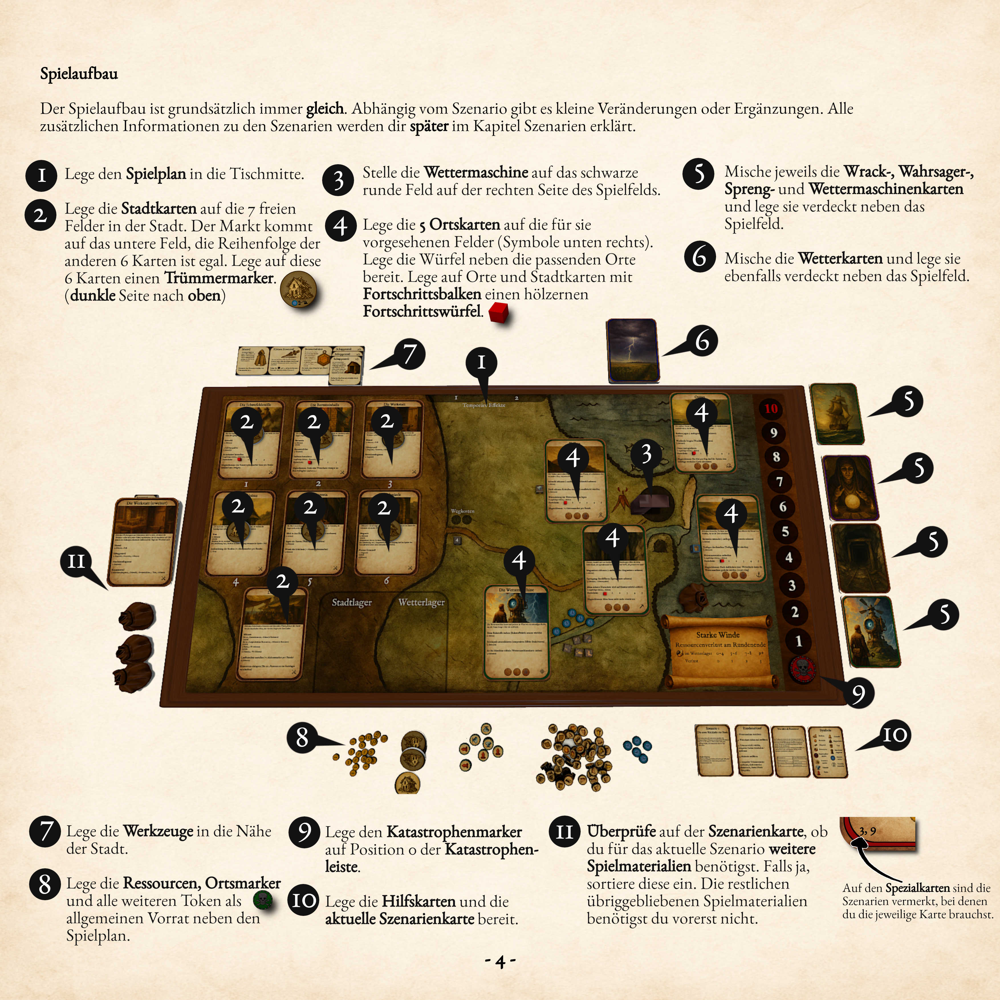
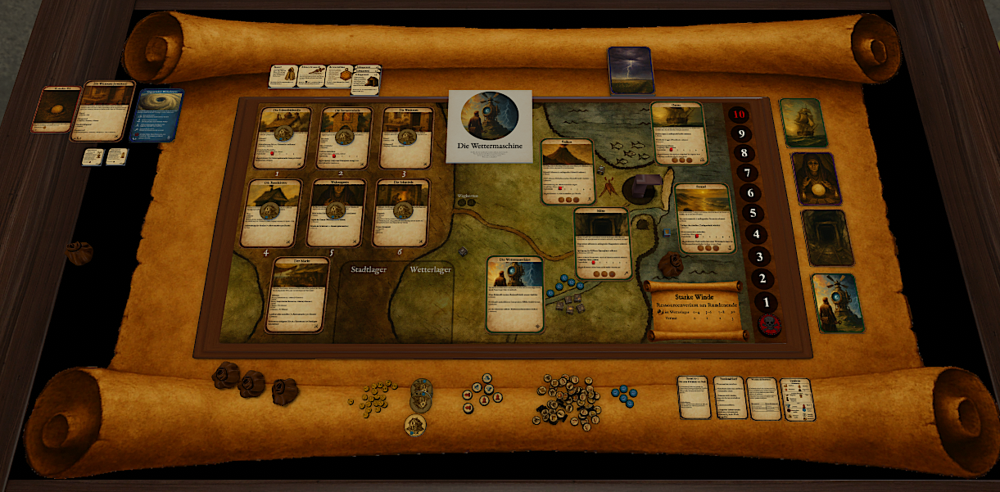
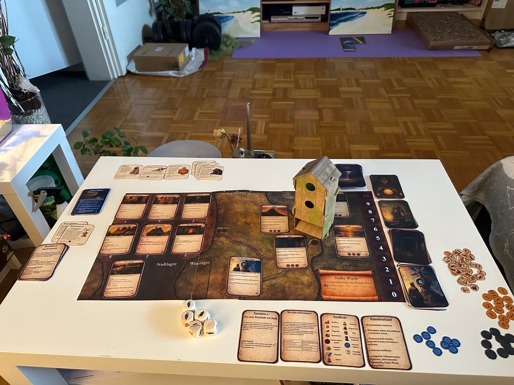

Überblick
"Die Wettermaschine" ist ein mechanik-fokussiertes, kooperatives Survival-Strategie-Kennerspiel für 1–4 Spieler, in dem die Spieler auf der abgelegenen Insel Tristan da Cunha im Jahr 1605 eine außer Kontrolle geratene Wettermaschine bändigen müssen. Sie sammeln Ressourcen, bauen die Stadt wieder auf und müssen Reparaturen durchführen, bevor der Katastrophenfortschritt die Insel zerstört. Das Spiel erstreckt sich über eine Kampagne aus neun aufeinander aufbauenden Szenarien mit freischaltbaren Upgrades und Achievements.
Woher die Idee kam
Der Ursprung von Die Wettermaschine war kein methodischer Designprozess, sondern ein spontaner kreativer Moment. Ich lag im Bett und schlief, als ich um 6 Uhr morgens hochschreckte, und die Idee für ein eigenes Brettspiel war einfach da. Sie hielt mich wach, und das Spiel setzte sich vor meinem inneren Auge immer weiter zusammen. Das klingt ausgedacht und klischeehaft, ist aber genau so passiert. Der Kern dieser ersten Vision war sofort klar umrissen: Eine Wettermaschine ist außer Kontrolle geraten und muss repariert werden, bevor sie eine Katastrophe auslöst. Das entscheidende Detail, das die Idee von Anfang an trug, war die Möglichkeit, die Maschine in verschiedene Richtungen auszurichten und damit ihre Effekte zu beeinflussen. Diese eine Mechanik ist bis heute das Herzstück des Spiels geblieben.
Welche Erfahrung ich schaffen wollte
Meine initiale Vision drehte sich weniger darum, ein konkretes Problem zu lösen, als darum, ein bestimmtes Spielgefühl zu erzeugen. Rückblickend lassen sich drei Motivationen benennen, die mich angetrieben haben. Erstens die Faszination für das Spiel gegen das Spiel. Ich bin bekennender Spieleliebhaber, und besonders Kennerspiele ziehen mich in ihren Bann. Mich begeistern Spiele, in denen man gegen das System antritt und es zu schlagen versucht, allein oder im Team. Daraus ergab sich fast zwangsläufig mein Genre-Entschluss: ein kooperatives Survival-Strategie-Kennerspiel. Zweitens wollte ich Herausforderung mit Planbarkeit als zentrales Erlebnis verankern. Das Gefühl, das ich treffen wollte, war eine Mischung aus Bedrohung, Anspannung und der Genugtuung, übermächtige Naturgewalten am Ende doch zu bezwingen. Drittens reizte mich der Effekt eines physischen Objekts, das beim Aufbau begeistert. Schon in meiner ersten Mindmap hielt ich fest, dass die Wettermaschine als Würfelturm funktionieren soll. Inspiriert von dem Spiel Flügelschlag wollte ich den Moment einfangen, in dem ein haptisches Element für ein spürbares „Woah" sorgt. Die Maschine sollte also nicht nur das Thema sein, sondern auch ein greifbares Spielobjekt.
Wie ich die Vision verankert habe
Anders als bei vielen Projekten kam bei mir das Setting gemeinsam mit der Spielidee, sodass es mir sogar schwerfiel, überhaupt Alternativen zu suchen. Trotzdem habe ich methodisch drei Optionen durchgespielt: ein neuzeitliches Insel-Setting, ein postapokalyptisches Ödland und ein mythisches Fantasy-Szenario. Entschieden habe ich mich für die abgelegene Insel Tristan da Cunha im Jahr 1605: ein exzentrischer Erfinder, der seine eigene Maschine bändigen muss, die er ursprünglich gebaut hatte, um die Insel sicherer und bewohnbarer zu machen.
Um die Idee im Genre-Kontext zu verorten, habe ich verwandte Spiele analysiert. Paleo lieferte das Vorbild für kooperatives Überleben mit Werkzeugen und einer Verlustmechanik. Harry Potter: Kampf um Hogwarts zeigte mir, wie eine Szenario-Progression mit ansteigendem Schwierigkeitsgrad funktioniert. Robinson Crusoe war besonders relevant, weil die Spieler dort wie in meiner Idee Ressourcen sammeln, Aktionen ausführen und kooperativ handeln müssen, und weil es als einziges der drei auch solo spielbar ist. Ergänzend habe ich mich von einzelnen Mechaniken aus weiteren Spielen inspirieren lassen, etwa dem Würfelturm aus Flügelschlag, der rundenabhängigen Verfügbarkeit von Orten aus Dune: Imperium und dem Aktionsmarker-System aus Time Rogue.
Das Designziel hinter allem
Wenn ich die ursprüngliche Vision auf ein einziges Designziel verdichte, dann ist es das, was Salen und Zimmerman als meaningful play beschreiben. Spieler sollen Entscheidungen treffen, oft ohne vollständige Information, die das Spielgeschehen spürbar und nachvollziehbar beeinflussen. Die ausrichtbare Wettermaschine ist meine mechanische Antwort auf genau diesen Anspruch. Jede Runde steht eine echte Entscheidung an, nämlich wohin ich die Maschine richte, und diese Entscheidung hat unmittelbare Konsequenzen. Das ist der rote Faden, der sich von jener ersten Eingebung um 6 Uhr morgens bis zum heutigen Entwicklungsstand durchzieht.
Kernmechaniken
Die Spieler richten jede Runde die Wettermaschine auf einen von vier Orten aus und ziehen dann eine Wetterkarte, deren Effekt von dieser Ausrichtung abhängt. Mit ihren begrenzten Aktionspunkten sammeln sie Ressourcen, bauen Werkzeuge und bringen Reparaturteile an der Maschine an, um das jeweilige Szenarioziel zu erreichen, bevor die Katastrophenleiste das Maximum erreicht und die Insel verloren ist.
- Mechanik 1: Die ausrichtbare Wettermaschine
Das ist das Herzstück und das eigentliche Alleinstellungsmerkmal. Jede Runde richtet der Spieler (oder im Koop die Gruppe) die Maschine auf einen der vier Orte aus. Diese Ausrichtung bestimmt, welcher von vier möglichen Effekten der gezogenen Wetterkarte zum Tragen kommt. Daraus entsteht die zentrale Entscheidung des Spiels: Wohin richte ich die Maschine, um den größten Nutzen zu ziehen oder den größten Schaden zu vermeiden? Zusätzlich ist die Maschine physisch als Würfelturm umgesetzt, was sie auch haptisch zum Mittelpunkt macht.
- Mechanik 2: Das Wetterkarten-System mit Zeitdruck
Jede Runde wird eine Wetterkarte gezogen, deren Effekt das Spiel erschwert. Die Karten haben einen ausrichtungsabhängigen und einen statischen Effekt. Eingemischte spezielle Wetterkarten beschleunigen ab einem bestimmten Punkt das Spiel, indem mehr Karten pro Runde gezogen werden müssen. Das erzeugt den Zeitdruck, der das Survival-Gefühl trägt.
- Mechanik 3: Die Katastrophenleiste als Verlust-Uhr
Die Leiste läuft von 0 bis 10. Erreicht sie 10, ist das Spiel verloren. Sie steigt durch Wetterkarten und durch volle Orte (drei Ortsmarker auf einem Ort). Reparaturen an der Maschine können sie wieder senken. Diese Mechanik ist der ständige Gegenspieler und gibt dem ganzen Spiel seine Dringlichkeit.
- Mechanik 4: Ressourcenmanagement mit Aktionslimit
Der Spieler hat pro Runde fünf Aktionsmarker. Mit diesen sammelt er an den Orten Ressourcen (Magnetiterz, Schwefel, Bernstein, Robben), veredelt sie in der Stadt, baut Werkzeuge und bringt Reparaturteile an. Die Knappheit von Aktionen zwingt zu ständiger Priorisierung. Hier sitzt der strategische Kern des Spiels.
- Mechanik 5: Langfristige Aktionen mit Fortschrittsbalken
An vielen Orten gibt es mehrstufige Aktionen, die über mehrere Runden vorangetrieben werden und bei Abschluss eine starke Belohnung geben. Sie schaffen einen zweiten, langsameren Entscheidungshorizont neben dem kurzfristigen Ressourcensammeln und sind zugleich ein Werkzeug, um Ortsmarker abzubauen.


Design-Prozess
Phase 1: Die Idee und ihre Verankerung
Nach der Spielanalyse und Setting-Wahl habe ich parallel einen analogen und einen digitalen Prototyp im Tabletop Simulator gebaut. Ergänzend entstand eine Mindmap für die Bausteine des Spiels und ein Moodboard, um das angestrebte Gefühl festzuhalten.
Phase 2: Prototyping und kritische Analyse
In der zweiten Phase habe ich den Prototyp systematisch weiterentwickelt und vor allem hinterfragt. Ich habe eine konkrete Persona definiert – den strategischen Solo-Vielspieler – und daraus eine Spaß- und Frustliste abgeleitet. Daraus wiederum habe ich messbare Balancing-Ziele formuliert, etwa eine angestrebte Siegchance zwischen 30 und 60 Prozent und das ausdrückliche Verbot dominanter Strategien. Um das Balancing überhaupt steuern zu können, habe ich konkrete Kennzahlen festgelegt, also Stellschrauben wie die Anzahl der Wetterkarten, die Höhe der Katastrophenleiste oder den durchschnittlichen Ressourcendurchsatz pro Runde. Ich habe den Prototyp digital spielbar gemacht und auf Steam veröffentlicht, um ihn leichter testen zu lassen.
Phase 3: Finalisierung
In der dritten Phase habe ich aus dem Prototyp ein vollständiges Produkt geformt. Dazu gehörten ein ausformuliertes Regelwerk im historischen Stil, neun aufeinander aufbauende Szenarien, eine durchgerechnete Preiskalkulation für verschiedene Produktionsmengen und ein physischer Prototyp, den ich selbst gebaut habe. Wichtig war mir hier auch die ehrliche Reflexion: Ich habe offene Schwachstellen klar benannt, statt sie zu verstecken – etwa das Problem der Ortsmarker und die Tatsache, dass ich zu wenige unabhängige Spieletests durchführen konnte.
Die wichtigsten Design-Entscheidungen
Die erste war die Festlegung auf die ausrichtbare Maschine als unverrückbaren Kern. Alles andere im Spiel ordnet sich dieser einen Entscheidung pro Runde unter. Damit habe ich früh ein klares Fundament gesetzt, von dem ich nie abgewichen bin.
Die zweite war die bewusste Reduktion auf den Solo-Modus, ausgelöst durch externes Feedback – dazu mehr im Abschnitt Playtesting.
Die dritte war die thematische Überarbeitung der Ressourcen, ebenfalls eine direkte Reaktion auf Feedback, die ich im Playtesting-Abschnitt ausführlich beschreibe.
Die vierte war die Kampagnenstruktur. Statt einer Aneinanderreihung loser Partien habe ich neun Szenarien in fester Reihenfolge entworfen, die im Schwierigkeitsgrad ansteigen und thematisch eine Entwicklung erzählen – von der ersten Rückkehr in die zerstörte Stadt bis zum großen Finale an der Maschine.
„Betriebsblindheit ist die größte Gefahr des Solo-Entwicklers."
Playtesting & Iteration
Wie ich getestet habe
Mein Testen lief auf mehreren Ebenen ab, die sich gegenseitig ergänzt haben. Zuerst habe ich parallel zwei Prototypen gebaut – einen analogen zum Anfassen und einen digitalen im Tabletop Simulator. Der digitale Prototyp war für mich das schnellere Iterationswerkzeug, weil ich dort Karten, Werte und Regeln verändern konnte, ohne jedes Mal neu basteln zu müssen. Den Großteil der Interaktionen habe ich zunächst selbst durchgespielt, da das Spiel als Solo-Spiel angelegt ist und ich mich selbst klar in der Zielgruppe verorte.
Über das reine Selbsttesten hinaus habe ich den Prototyp meiner Freundin und meiner C-Lab-Gruppe vorgestellt und sie spielen lassen, um Reaktionen von außen zu bekommen. Außerdem habe ich eine spielbare Version im Steam Workshop veröffentlicht, um die Hürde für weitere Tests zu senken.
Eine wichtige Ergänzung war das analytische Testen über Kennzahlen. Statt nur auf Bauchgefühl zu vertrauen, habe ich messbare Stellschrauben definiert – etwa die Anzahl der Wetterkarten, die Höhe der Katastrophenleiste, die durchschnittlich gesammelten und verlorenen Ressourcen pro Runde und das Aktionslimit. Diese Kennzahlen haben mir erlaubt, gezielt am Balancing zu drehen und Veränderungen nachvollziehbar zu bewerten.
Welches Feedback ich bekommen habe
Das wertvollste Feedback hat zu zwei grundlegenden Kurskorrekturen geführt.
Die erste betraf den Spielumfang. Ursprünglich wollte ich das Spiel direkt kooperativ bauen. Im Austausch wurde deutlich, dass dies das Balancing in einem zu frühen Stadium überfordert hätte. Daraufhin habe ich den kooperativen Modus bewusst herausgenommen und mich auf einen sauber funktionierenden Solo-Modus konzentriert. Das war schmerzhaft, aber richtig, weil es mir erlaubt hat, das Fundament sauber auszubalancieren, bevor ich Komplexität hinzufügte.
Die zweite Korrektur betraf die Ressourcen. In einer frühen Version arbeitete ich mit generischen Ressourcen wie Getreide, Fisch und Wild. Diese passten weder zum kargen Inselsetting noch zur historischen Glaubwürdigkeit, die ich anstrebte. Ich habe sie durch stimmige Materialien ersetzt – Magnetiterz, Schwefel, Bernstein und Robben – passend zum Schauplatz Tristan da Cunha um 1605. Diese Änderung hat die Spielwelt deutlich kohärenter gemacht.
Aus dem konkreten Spieltesten kamen weitere, kleinere Anpassungen. Das Aktionslimit von fünf Aktionen pro Runde habe ich getestet und als stimmig bestätigt. Beim Spielen sind mir außerdem strukturelle Schwächen aufgefallen, die ich offen dokumentiert habe – etwa das Problem, dass sich Ortsmarker ohne Gegenmechanik anhäufen und die Ausrichtungsentscheidung entwerten, sowie eine erzählerische Unstimmigkeit bei den Trümmermarkern in der Stadt. Diese Beobachtungen sind direkt in die spätere Weiterentwicklung eingeflossen, in der ich gezielt Mechanismen entworfen habe, um Ortsmarker wieder aktiv abbauen zu können.
Ehrliche Einordnung meiner Testtiefe
So iterativ mein Vorgehen war – eine Grenze benenne ich bewusst. Es ist mir nicht gelungen, genügend unabhängige Testpersonen zu gewinnen, besonders für die späteren und schwierigeren Szenarien. Das Balancing dieser Szenarien beruht daher stärker auf meinen Kennzahlen und Schätzungen als auf breiter empirischer Erprobung. Ich sehe das nicht als Makel, den ich verstecke, sondern als klar benannten nächsten Schritt.
Mein Prozess zeigt, dass ich nicht in eine einzige Version verliebt bin, sondern bereit, sie auf Feedback hin grundlegend zu verändern. Ich habe einen ganzen Spielmodus gestrichen, ein komplettes Ressourcensystem ausgetauscht und Schwächen meines eigenen Entwurfs offen benannt. Gleichzeitig treffe ich Entscheidungen nicht beliebig, sondern leite sie aus Personas, einer Spaß- und Frustanalyse und konkreten Kennzahlen ab. Dieses Zusammenspiel aus messbarer Analyse und der Offenheit, eigene Annahmen zu verwerfen, ist der Kern meiner iterativen Arbeitsweise.


Skalierung & Balance
Die zentrale Herausforderung
Das Grundproblem jeder kooperativen Skalierung lautet: Mehr Spieler bedeuten nicht einfach mehr Spaß, sondern mehr Handlungskapazität. Vier Spieler haben pro Runde rund das Vierfache an Aktionen zur Verfügung wie ein einzelner. Wenn ich nichts dagegen unternehme, wird das Spiel zu viert trivial, während es solo eine echte Herausforderung bleibt. Meine Aufgabe war es also, dafür zu sorgen, dass sich der Schwierigkeitsgrad über alle Spielerzahlen hinweg vergleichbar anfühlt, ohne für jede Spielerzahl ein eigenes Spiel zu bauen.
Mein wichtigstes analytisches Werkzeug dabei war die Unterscheidung zwischen Elementen, die ohnehin schon mit der Spielerzahl mitwachsen, und Elementen, die das nicht tun. Nur Letztere müssen aktiv skaliert werden. Diese Unterscheidung hat mich vor der häufigsten Falle bewahrt: der Doppelskalierung, bei der ein Element gleich zweifach erschwert wird und das Spiel dadurch unfair hart wird.
Die hybride Spielstruktur als Fundament
Bevor ich einzelne Werte skaliert habe, musste die Grundstruktur stimmen. Ich habe mich für eine hybrid-simultane Spielstruktur entschieden. Die gemeinsamen Phasen – das Ausrichten der Maschine, das Ziehen der Wetterkarte und das Rundenende – erleben alle Spieler zusammen. Die Aktionsphase dagegen läuft sequenziell ab: Jeder Spieler spielt seinen eigenen Zug mit seinen eigenen fünf Aktionsmarkern.
Diese Entscheidung war analytisch motiviert. Eine vollständig simultane Struktur hätte das gesamte Solo-Regelwerk zerstört und unzählige Konfliktfälle erzeugt. Die hybride Struktur bewahrt dagegen rund neunzig Prozent des bestehenden Solo-Systems und macht das Spiel überhaupt erst sauber skalierbar. Sie löst außerdem das verbreitete Quarterback-Problem, bei dem ein dominanter Spieler allen anderen ihre Züge diktiert, weil jeder Spieler einen klar abgegrenzten eigenen Handlungsmoment hat.
Was ich skaliere – und was bewusst nicht
Ich habe die Spielelemente systematisch danach sortiert, ob und wie sie mit der Spielerzahl wachsen.
Die Aktionsmarker pro Spieler bleiben konstant bei fünf. Sie dürfen nicht skaliert werden, weil die zusätzliche Handlungskapazität genau das ist, was mehr Spieler ausmacht. Hier liegt die Quelle des Problems, nicht seine Lösung.
Die Siegziele der Szenarien skalieren mit der Spielerzahl, allerdings bewusst nicht streng linear. Vier Spieler sind spielmechanisch nicht viermal so stark wie einer, sondern eher drei- bis dreieinhalbmal, weil ein Teil ihrer Aktionen in Koordination, Transport und Synergien fließt.
Die Effekte der Wetterkarten skalieren mit der Spielerzahl, weil die Gruppe insgesamt mehr Ressourcen besitzt und daher proportional mehr verlieren muss, damit die Bedrohung gleich schwer wiegt.
Die Werkzeugpreise skalieren linear – doppelter Preis bei zwei Spielern, vierfacher bei vier. Das ist hier korrekt, weil ein Werkzeug einen globalen Bonus gibt, von dem die ganze Gruppe profitiert.
Bewusst nicht skaliert habe ich dagegen die Anzahl der Schuppenteile. Genau hier hätte die Doppelskalierung zugeschlagen, denn da die Werkzeugpreise bereits mit der Spielerzahl steigen, sind drei Schuppenteile zu viert schon automatisch viermal so teuer wie solo. Diese Einsicht habe ich zum allgemeinen Prinzip erhoben: Ein Element, das bereits über einen anderen Mechanismus skaliert, wird nicht ein zweites Mal skaliert.
Drei Detailprobleme und ihre Lösungen
Das erste betraf die Aktionskarten. Bei vier Spielern werden viel mehr Karten gezogen, was starke Effekte inflationär machen würde. Statt die Effekte pauschal abzuschwächen, habe ich die Karten in drei Typen unterteilt: Reine Ressourcenboni bleiben unverändert, strukturelle Effekte bleiben bewusst selten. Nur die Stapelgröße selbst wächst moderat – und zwar ausschließlich mit schwachen Karten.
Das zweite betraf die langfristigen Aktionen. Vier Spieler könnten eine mehrstufige Aktion in einer einzigen Runde abschließen, was die Risiko- und Zeitabwägung zerstören würde. Meine Lösung: Pro Runde darf nur ein Spieler an einer bestimmten langfristigen Aktion arbeiten.
Das dritte betraf die Achievements, die als Gruppe verdient werden und dadurch zu viert oft leichter zu erreichen wären. Spielerzahl-unabhängige Achievements bleiben gleich, die übrigen bekommen mild ansteigende Schwellen.
Persönliches Inventar als bewusst eingeführtes Reibungselement
Eine Anpassung möchte ich besonders hervorheben, weil sie zeigt, dass Skalierung nicht nur Erschwerung bedeutet, sondern auch neue Mechanik schaffen kann. Im Koop sammeln die Spieler Ressourcen zunächst in ein persönliches Inventar und übertragen sie erst am Rundenende ins gemeinsame Lager. Das persönliche Inventar zwingt jeden Spieler, seine eigenen Transportwege zu planen, und macht die Bewegung über die Insel zu einer echten taktischen Entscheidung.
Skalierung ist für mich kein nachträgliches Anpassen von Zahlen, sondern eine analytische Disziplin. Ich gehe jedes Spielelement einzeln durch und frage, ob es bereits mitwächst, ob es linear oder unterproportional skalieren muss und ob eine Skalierung andere Mechaniken bricht. Genauso wichtig ist mir zu wissen, wann ich nicht skalieren darf.
Ergebnis & Learnings
Was ich gelernt habe
Das wichtigste Learning aus diesem Projekt ist die Disziplin, eine Idee bewusst zu verkleinern, bevor ich sie vergrößere. Erst als das Fundament aus ausrichtbarer Maschine, Ressourcenkreislauf und Katastrophenleiste in sich stimmig war, konnte ich darauf verlässlich aufbauen. Daneben habe ich gelernt, Designentscheidungen nicht allein aus dem Bauchgefühl zu treffen, sondern sie aus Personas, einer Spaß- und Frustanalyse und konkreten Kennzahlen herzuleiten.
Was ich beim nächsten Mal anders machen würde
Am deutlichsten würde ich früher und breiter mit unabhängigen Personen testen. Mein größter blinder Fleck war die Betriebsblindheit des Solo-Entwicklers. Beim nächsten Mal würde ich von Anfang an ein strukturiertes Testprogramm einplanen und die Komplexität noch konsequenter portionieren – neue Systeme erst dann hinzufügen, wenn das darunterliegende empirisch, und nicht nur rechnerisch, abgesichert ist.
Aktueller Stand und Ausblick
Die Wettermaschine ist aktuell ein vollständig konzipiertes und spielbares Projekt, das ich mitten in der Weiterentwicklung habe. Das Solo-Spiel ist durchdesignt, dokumentiert und sowohl als physischer als auch als digitaler Prototyp spielbar. Derzeit erweitere ich es um einen kooperativen Modus mit eigenen Charakteren und um ein tiefergehendes Kampagnensystem mit freischaltbaren Verbesserungen und Achievements.
Wichtig zu wissen ist, dass das Spielregelheft noch nicht den aktuellsten Entwicklungsstand abbildet, sondern bisher auf den Solomodus begrenzt ist. Interessierte können die Anleitung gerne herunterladen, um einen Einblick in das bisherige Fundament zu bekommen.
Der nächste große Schritt ist ein strukturiertes, unabhängiges Testprogramm, mit dem ich die bislang analytisch hergeleiteten Werte des Koop- und Kampagnenmodus empirisch absichern und das Spiel Schicht für Schritt zu einer runden Gesamterfahrung führen will.
↓ Spielregeln als PDF herunterladen